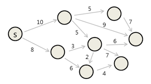
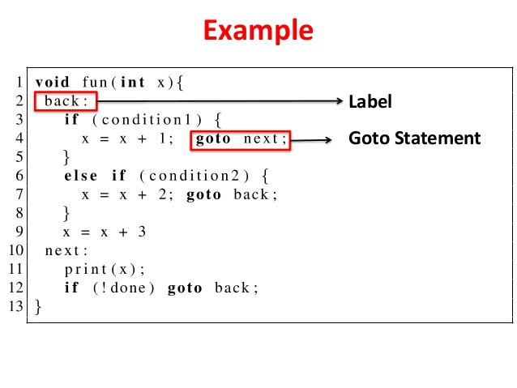

패러다임
패러다임이란?
프로그래밍 하는 방법을 말한다. 언어에 독립적이며 어떤 프로그래밍 구조를 사용할지, 언제 구조를 사용해야 하는지를 결정한다. 즉, 프로그래머에게 프로그래밍 관점을 제공해준다.
또한 패러다임은 무엇을 해야할지를 말하기 보다는 무엇을 해서는 안되는지를 말해준다.
1. 구조적 프로그래밍 (Structured Programming)
최초로 적용된 패러다임으로 1968년 에츠허르 비버 데이크스트라가 발견했다.
구조화 프로그래밍으로도 불리며 프로그래밍 패러다임의 일종인 절차적 프로그래밍의 하위 개념으로 볼 수 있다.
절차적 프로그래밍이란 단순히 순차적인 명령 수행이 아니라 루틴, 서브루틴, 메소드, 함수 등(이를 통틀어 *프로시저라고 한다.)을 이용한 프로그래밍 패러다임을 뜻한다.
따라서 절차적 프로그래밍의 중요한 점은 반복될 가능성이 있는 모듈을 재사용 가능한 프로시저 단위(함수단위)로 나누는데 있다.
절차적 프로그래밍의 발전한 형식이 바로 구조적 프로그래밍이다. 절차적 프로그래밍이 함수를 기준으로 나뉜다면 구조적 프로그램은 모듈을 기준으로 나뉜다.
GOTO문을 없애거나 GOTO문에 대한 의존성을 줄여주는 것으로 가장 유명하다.
* 프로시저도 함수라고 생각하면 된다. 다만 반환값이 없고(없다) 실행이 주가되는 함수를 의미 ex) printf
구조적 프로그래밍 더 알아보기 > https://kamang-it.tistory.com/entry/….
에츠허르 비버 데이크스트라
 {: width=”30%” height=”30%”}
{: width=”30%” height=”30%”}
1930년 5월 11일 ~ 2002년 8월 6일부터 활동한 네덜란드의 컴퓨터 과학자로 전산학이 아직 학문으로 완전하게 정립되지 않았던 시절에 전산학의 여러 분야에 걸쳐 많은 공헌을 했다.
업적
- 데이크스트라(다익스트) 알고리즘을 개발하여 최단 경로 문제에 대한 학문적 연구를 시작

- GOTO문을 사용하지 말 것을 주장했으며, 그의 주장은 1968년에 그의 논문 “GOTO문의 해로움”(Go To Statement Considered Harmful) 에 정리
- 세마포어에 대한 연구를 처음으로 시작하였다.
증명
데이크스트라는 무분별한 점프(goto 문장)는 모듈을 더 작은 단위로 분해하는 과정에서 방해가 될 뿐만 아니라,
전체적인 프로그램 구조에 해롭다는 사실을 깨달았다.
이러한 점프 대신 if/then/else 와 do/while/until 과 같은 분기와 반복이라는 단순한 제어구조로 사용한다면 goto문을 더 좋은 방식으로 사용할 수 있다고 주장했다.

또한 모든 프로그램을 순차, 분기, 반복 이라는 세가지 구조만으로 표현할 수 있다는 사실도 알아냈다.
순차(concatenation) : 구문 순서에 따라서 순서대로 수행된다는 것이다.
선택(selection) : 프로그램의 상태에 따라서 여러 구문들 중에서 하나를 수행하는 것이다. 주로 if..then..else..endif, switch, case 가 있다.
반복(repetition): 프로그램이 특정 상태에 도달할 때까지 구문을 반복하여 수행하거나, 집합체의 각각의 원소들에 대해 어떤 구문을 반복 수행하는 것이다. while, for, do..until 등이 있다.
해로운 성명서
데이크스트라의 goto문의 해로움과 더불어 세가지 제어 구조에 대한 주장으로 10년 이상의 전쟁이 지속되었다.
결과적으로 데이크스트라의 승리.
현재 제어흐름을 제약없이 직접 전환할 수 있는 선택권 자체를 언어에서 제공하지 않고 있으며, java의 break 문이나 예외 마저도 과거의 포트란이나 코볼 같은 언어와 달리 구조에 제한이 완전히 없는 것은 아니다.
심지어 goto 키워드를 여전히 지원하는 언어에서도 goto문의 목적지 범위를 현재 함수 안으로 한정시키는 편이다.
우리는 모두 구조적 프로그래머 이다.
기능적 분해
구조적 프로그래밍을 통해 모듈을 기능적으로 분해할 수 있게 되었다.
즉, 프로그래머는 대규모 시스템을 모듈과 컴포넌트로 나눌수 있고, 고수준의 기능들을 저수준의 함수들로 분해할 수 있다.
이러한 과정을 끊임없이 반복하며 증명 가능한 더 작은 단위의 모듈들로 쪼개나갈 수 있게 되었다.
테스트
테스트는 버그가 있음을 보여줄 뿐, 버그가 없음을 보여줄 수는 없다.” - 데이크스트
다시 말해, 프로그래밍이 잘못되었음을 테스트를 통해 증명할 수는 있지만, 프로그래밍이 맞다고 증명할 수는 없다. 테스트가 보장해 줄수 있는 것은 프로그램이 목표에 부합할 만큼은 충분히 참이라고 여길수 있게 해주는 것 뿐이다.
구조적 프로그램은 프로그램을 증명 가능한 세부 기능 집합으로 재귀적으로 분해할것을 강요한다. 그런 후 테스트를 통해 증명가능한 세부 기능들이 거짓인지를 증명하려고 한다.
만약 테스트가 실패한다면, 해당 기능에 대해 충분히 목표에 부합할 만큼은 참이라고 여긴다.
결론
구조적 프로그래밍이 오늘날까지 가치 있는 이유는 프로그래밍에서 반증 가능한 단위를 만들어 낼 수 있는 능력 때문이다. 또한 효율적인 기능적 분해도 한몫을 한다.
따라서 소프트웨어 아키텍트는 모듈, 컴포넌트, 서비스가 쉽게 반증가능하도록 (테스트 하기 쉽도록) 만들기 위해 노력해야 한다.
구조적 프로그래밍은 제어흐름의 직접적인 전환에 대해 규칙을 부과한다.